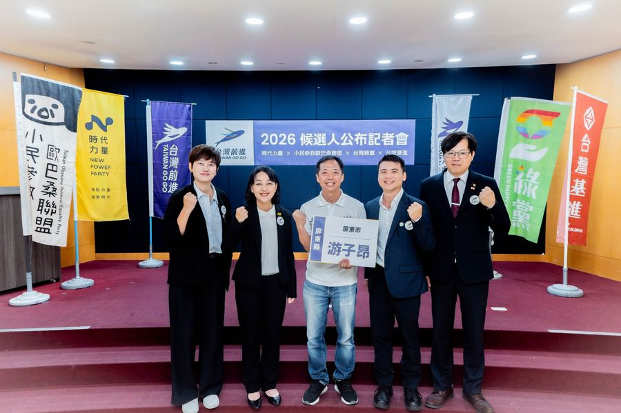

每一件都是市民代表職權範疇內可以實際推動的事，不是空話。你對哪一件有話說？直接留言給我。
格外農品創辦人 × 食農永續推動者 × 屏東市民
從創業到參選，媒體報導與競選動態，依時間序完整記錄。
就食安法修法方向，游子昂指出兩個各版本都還沒補的盲點：檢驗量能不足、缺乏吹哨者保護，呼籲修法不能只加法條、不加人手，把基層累垮。
查看報導 →就屏東科學園區半導體供應鏈專區動土，游子昂提醒應提前應對房價、車流、水資源與農民受惠等4大衝擊。
查看報導 →三立iNEWS報導格外農品把「格外品」做成可持續的產業模式，於12/23正式登錄創櫃板，成為社會企業類股票代號第一號。
查看報導 →格外農品串連全家便利商店、金色三麥，把土司邊、麥芽粕與醜蔬果變身永續啤酒與乳酪小土司，示範跨產業循環經濟。
查看報導 →格外農品產品進駐新加坡Prime Supermarket「臺灣好食日」，把台灣減廢加工食品推向海外通路。
查看報導 →格外農品獲選為遠傳落實Buying Power責任採購的社會創新夥伴，展現企業採購對社企的實質支持。
查看報導 →新加坡亞洲新聞台CNA Insider製作《Food, Wasted》專題，採訪格外農品探討亞洲食物浪費議題與解方。
查看報導 →跑行程的日常、與台灣前進夥伴並肩的時刻——不是形象照，是真實發生在屏東的畫面。
每一筆捐款都依法公開，讓政治獻金也說清楚。
意見、問題、願意加入志工——填表告訴我，我會親自回覆。

追蹤游子昂
即時掌握競選動態，歡迎追蹤各社群平台。